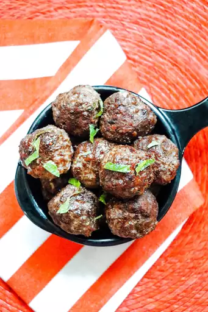

Try my new Turkish meatballs recipe if you are looking for a tasty main dish meal.

Ingredients
2 slices slightly stale whole wheat bread
1 pound lean ground lamb
1 egg
2 tablespoons chopped fresh parsley
2 cloves garlic
1 teaspoon ground cumin
1 teaspoon dried mint
½ teaspoon ground allspice
½ teaspoon salt
½ teaspoon ground black pepper
1 tablespoon olive oil
Directions
Step 1
Tear up bread slices into the bowl of a food processor; process into fine crumbs.
Add ground lamb and egg; process until blended. Add parsley, garlic, cumin,
mint, allspice, salt, and pepper; process until evenly combined.
Step 2
Roll lamb mixture into small meatballs.
Step 3
Heat olive oil in a large skillet over medium heat. Cook meatballs in batches,
turning occasionally until browned on all sides, 4 to 5 minutes per batch.
Transfer to a paper towel-lined plate using a slotted spoon.